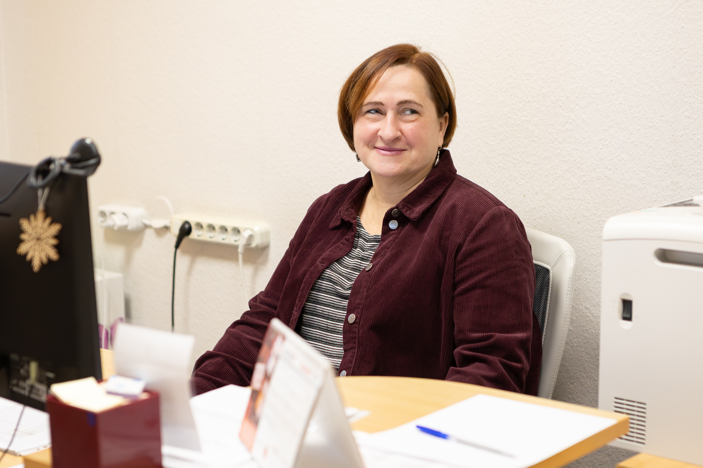

"Šobrīd vēl gaidu lielākas pārmaiņas,…"
Strādā Siguldas pilsētas vidusskolā kopš 2011.gada
Intervēja Marta Baltābola
Cik ilgi Jūs strādājat Siguldas pilsētas vidusskolā?
Siguldas pilsētas vidusskolā strādāju no pašiem tās pirmsākumiem. Iepriekš strādāju skolās, kuras vēlāk tika apvienotas. Trešā pamatskola apvienojās ar Otro vidusskolu un Otro pamatskolu, un 2011. gada augustā tika izveidota Siguldas pilsētas vidusskola. No Trešās pamatskolas pārgāju uz Otro vidusskolu, un pēc tam visas šīs skolas tika apvienotas. Tādēļ šeit strādāju jau kopš skolas dibināšanas.
Cik ilgi Jūs strādājat par lietvedi?
Par lietvedi strādāju kopš 2000. gada, tātad jau 26 gadus. Darbu uzsāku Trešajā pamatskolā, paralēli studējot Jelgavas Lauksaimniecības universitātes Sociālo zinātņu fakultātē, kur apguvu sabiedrības un organizāciju pārvaldību.
Kā izskatās Jūsu tipiska darba diena?
Ierodoties skolā, vispirms pārbaudu e-pastu, jo komunikācija ir būtiska darba sastāvdaļa. Katru dienu saņemam korespondenci no dažādām iestādēm un sagatavojam atbildes. Ja tiek saņemti pieprasījumi no policijas, sociālā dienesta vai bāriņtiesas, sagatavojam nepieciešamo informāciju un dokumentus noteiktajos termiņos. Katru mēnesi jāgatavo darba laika uzskaites tabulas. Mūsu skolā strādā vairāk nekā 100 skolotāju un aptuveni 30 tehnisko darbinieku, tāpēc nepārtraukti jāseko līdzi tam, kurš atrodas atvaļinājumā, slimo, dodas komandējumā vai izmanto bezalgas atvaļinājumu. Sagatavoju arī dažādus rīkojumus un ievadu informāciju sistēmās. Agrāk dokumenti tika rakstīti ar roku, bet tagad viss notiek elektroniski.
Jums ir ļoti daudz kam jāseko līdzi?
Jā, īpaši personāla jautājumiem. Skolēnus ikdienā tik labi nepazīstu, izņemot gadījumus, kad saistībā ar viņiem jāgatavo dokumenti sociālajam dienestam vai bāriņtiesai. Taču personāla jautājumos nepieciešams pārzināt ļoti daudz informācijas.
Vai Jūsu darbs ir laikietilpīgs?
Neteiktu, ka tas ir ļoti laikietilpīgs. Ja nepieciešamā informācija ir pieejama un viss ir skaidrs, darbu iespējams paveikt ātri un kvalitatīvi. Sarežģījumi rodas situācijās, kad informāciju nav iespējams savlaicīgi noskaidrot, jo tas aizkavē darba procesu. Ikdienā regulāri rodas jauni uzdevumi pienāk e-pasti, zvani un dažādi pieprasījumi, tāpēc vienmēr jāspēj operatīvi reaģēt.
Jūs minējāt galvenos darba pienākumus, bet kas ir pats svarīgākais Jūsu darbā?
Manuprāt, vissvarīgākās ir darba laika uzskaites tabulas. Tām vienmēr jābūt sagatavotām noteiktajā termiņā. Ja pašvaldība nosaka konkrētu datumu, kad informācija jāiesniedz grāmatvedībai, man ir svarīgi visu paveikt laikus. Ja kaut kas iztrūkst vai tiek nosūtīts nepareizi, tas var ietekmēt algu aprēķinus un radīt satraukumu citiem darbiniekiem. Tāpēc īpaši svarīga ir precizitāte un termiņu ievērošana.
Kādas ir svarīgākās prasmes, kas nepieciešamas šajā profesijā?
Ļoti svarīga ir termiņu ievērošana. Tāpat nepieciešamas zināšanas darbā ar dokumentiem un normatīvajiem aktiem. Jāzina Darba likums, skolotāju atvaļinājumu kārtība, papildu atvaļinājumi un citas ar personālu saistītas nianses. Likumi regulāri mainās, tāpēc tiem nepārtraukti jāseko līdzi. Ikdienā strādājam saskaņā ar Siguldas novada pašvaldības un Ministru kabineta noteikumiem.
Kādas ir lielākās pārmaiņas, ko esat pamanījusi mūsu skolā?
Šobrīd vēl gaidu lielākas pārmaiņas, jo ceram uz skolas renovāciju un uzlabojumiem. Mācību process turpinās, taču būtiski mainījusies dokumentu aprite viss kļūst arvien elektroniskāks. Agrāk lielākā daļa dokumentu bija papīra formātā, bet tagad informācija tiek ievadīta sistēmās. Vēlētos, lai skolā notiktu pārmaiņas un bērniem būtu pieejama mūsdienīga vide un visi nepieciešamie digitālie līdzekļi. Šobrīd vēl daudz kā pietrūkst, tāpēc ceru, ka nākotnē situācija uzlabosies.
SĀKUMS